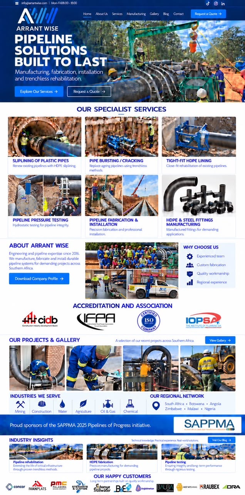
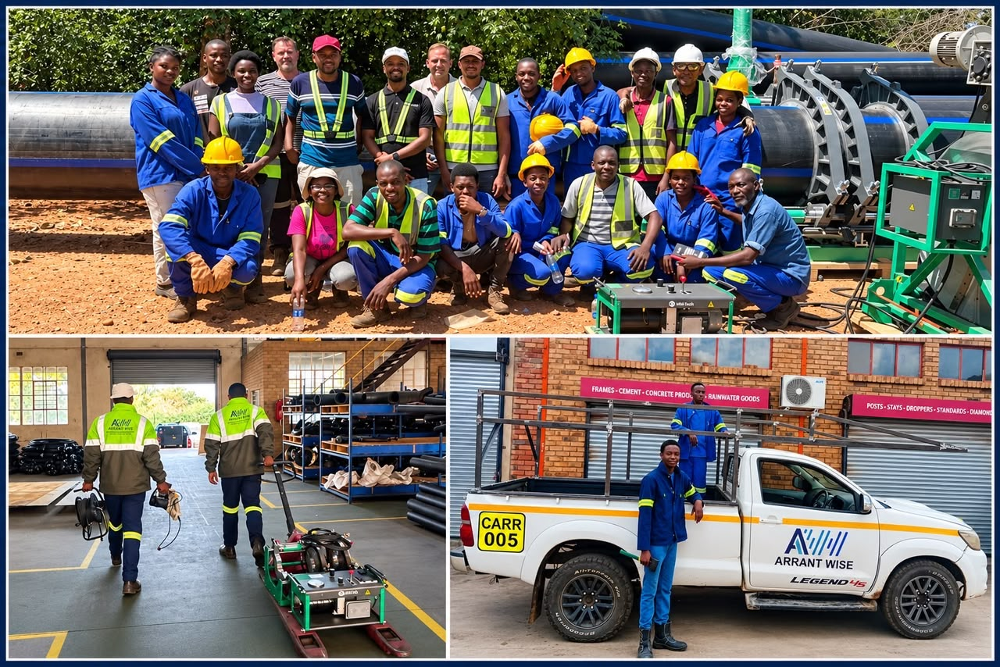
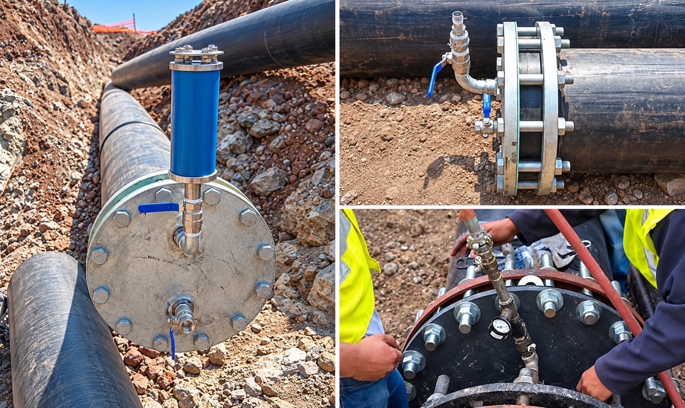

Pipeline installation
Professional pipeline installation and project delivery for demanding environments.
Explore service →Manufacturing, fabrication, installation and trenchless rehabilitation for demanding projects across Southern Africa.
Practical pipeline expertise, quality workmanship and solutions designed around your project.

Professional pipeline installation and project delivery for demanding environments.
Explore service →
Hydrostatic testing and checks to support pipeline integrity and performance.
Explore service →
Custom pipeline components, fittings and fabrication for site-specific requirements.
Explore capability →We bring people, equipment and technical know-how together to deliver practical pipeline solutions. From fabrication and installation to testing and rehabilitation, we focus on safety, quality and lasting results.
Practical technical knowledge and hands-on project experience.
Fabrication and installation tailored to project requirements.
Careful execution with attention to safety and performance.
Supporting infrastructure projects across Southern Africa.
A selection of pipeline installation, testing and team activities.
Place your verified certifications, memberships and partner logos here.